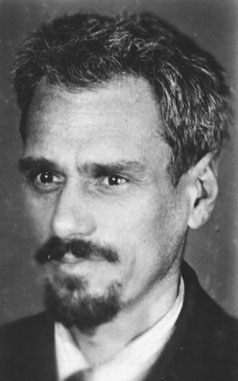
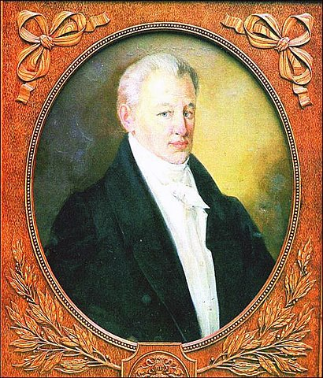
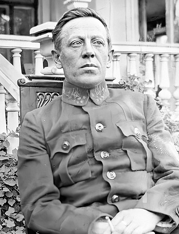
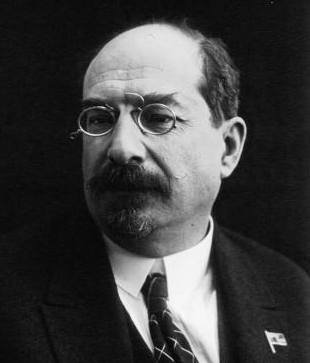

Вступ
Багато хто з нас справедливо вважає Полтавщину краєм, багатим на таланти. Це правда. Полтавщина дала Україні багатьох людей, які прославили її ім’я у світі. Про багатьох із них відомо лише вузькому колу спеціалістів, про інших ми чули лише краєм вуха. А як щодо тих, кого знають усі? Якщо озирнутися довкола, то можна побачити згадки про тих чи інших полтавців. Часто-густо ми навіть і не підозрюємо, що ці люди походять з Полтавщини, настільки вони важливі для нас, що вся Україна вважає їх за своїх.
- Данилко Андрій Михайлович - український актор, співак, сценарист, телеведучий, композитор. Відомий також під жіночим сценічним іменем Вєрки Сердючки.
- Кондратюк Юрій Васильович — вчений-винахідник, один із піонерів ракетної техніки й теорії космічних польотів.
- Котляревський Іван Петрович — письменник, поет, драматург, основоположник сучасної української літератури, громадський діяч.
- Петлюра Симон Васильович — державний, військовий та політичний діяч.
- Луначарський Анатолій Васильович — письменник, журналіст, політик.
Данилко Андрій Михайлович
Андрі́й Миха́йлович Дани́лко (нар. 2 жовтня 1973, Полтава) — український актор, співак, сценарист, телеведучий, композитор. Народний артист України (2008).[1] Відомий також під жіночим сценічним іменем Вєрки Сердючки. З 2016 по 2020 рік був членом журі шоу «Євробачення. Національний відбір».[2][3] Також з 2016 року — член журі й наставник талант-шоу «X-Фактор» на телеканалі СТБ.[4]
Кондратюк Юрій Васильович

Ю́рій Васи́льович Кондратю́к (справжнє ім'я Шаргей Олександр Гнатович; нар. 9 (21) червня 1897, Полтава, Україна — місце та дата смерті невідомі, не раніше 1942) — український учений-винахідник, один із піонерів ракетної техніки й теорії космічних польотів. Автор так званої «траси Кондратюка», якою подорожували на Місяць космічні кораблі «Аполлон».
Котляревський Іван Петрович

Іва́н Петрович Котляревський (29 серпня (9 вересня) 1769, Полтава — 29 жовтня (10 листопада) 1838, Полтава) — український письменник, військовий, класик нової української літератури, громадський діяч. Його поема «Енеїда» (1798) стала великим твором загальнонаціонального значення нової української літератури, написаним народною мовою.
Котляревський зробив найвагоміший внесок у становлення сучасної української літературної мови. В умовах занепаду всіх різновидів староукраїнської писемної мови, поема «Енеїда», п'єси «Наталка Полтавка» і «Москаль-чарівник», написані на основі живого усного мовлення народу, започаткували новий етап формування літературної мови.
Петлюра Симон Васильович

Си́мон Васи́льович Петлю́ра, власне Семен Васи́льович Петлю́ра[2] (10 [22] травня 1879, Полтава, Російська імперія — 25 травня 1926, Париж, Франція) — український державний, військовий та політичний діяч, публіцист, літературний і театральний критик. Є нащадком давнього козацького роду. Організатор українських збройних сил. Член Генерального секретаріату Української Центральної Ради на посаді Генерального секретаря з військових справ (28 червня — 31 грудня 1917[3]). Політв'язень при владі Павла Скоропадського (27 липня — 12 листопада 1918). Головний отаман військ Української Народної Республіки (УНР) (з листопада 1918). 2-й Голова Директорії УНР (9 травня 1919 — 10 листопада 1920). Борець за незалежність України у ХХ сторіччі. Дядько по матері патріарха Мстислава (Скрипника). Є національним героєм України.
Анатолій Васильович Луначарський

Анатолій Васильович Луначарський (11 (23) листопада 1875, Полтава, Російська імперія — 26 січня 1933, Ментон, Франція) — радянський державний діяч, письменник, драматург, літературний критик, мистецтвознавець, один з основоположників так званої пролетарської літератури. Брав участь в організації гуртків лівих письменників за межами Росії, в роботі Пролеткульту.